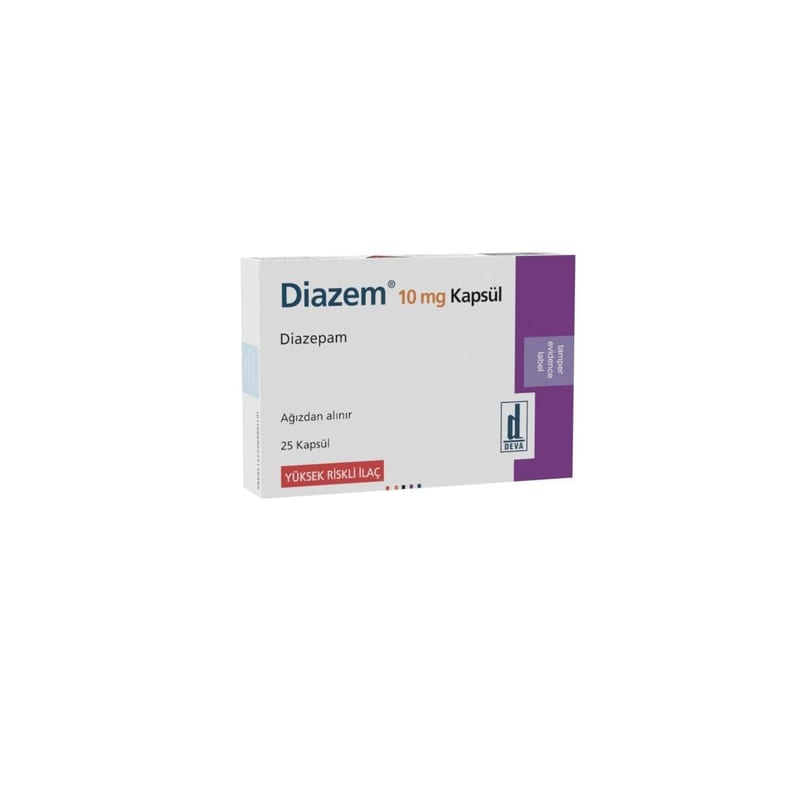

Diazem 10 mg Kapsül, 25 Kapsül

Ne için kullanılır
KT · Bölüm 1DİAZEM’ in etkin maddesi benzodiyazepinler adı verilen bir ilaç grubuna dahil olan diazepamdır. Her bir kapsül 10 mg etkin madde içermektedir. DİAZEPAM, 25 veya 50 kapsül içeren blister ambalaj, bir adet kullanma talimatı ile birlikte karton kutularda sunulmaktadır. D İAZEM aşağıdaki durumların tedavisinde kullanılmaktadır; • Anksiyetenin (endişe,kaygı) kısa süreli tedavisinde, • Alkolü bırakan hastalarda oluşan belirtiler (huzursuzluk, titreme, hayal görme, huzursuzluk-ta şkınlık, hezeyan gibi belirti gösteren ani geçici bilinç bozukluğu)
• Kasların gevşemesine yardımcı olmak ve kas kasılmaları ile serebral inme için (beyni etkileyen ve hareket sorunlarına ve kas sertliğine neden olan bir koşul) • Havale (nöbet) • Titreme (ailevi kaynaklı olabilir bazen ise nedeni belli olmayabilir) • Ağrılı kas kasılmalarının ilerleyici bir türü